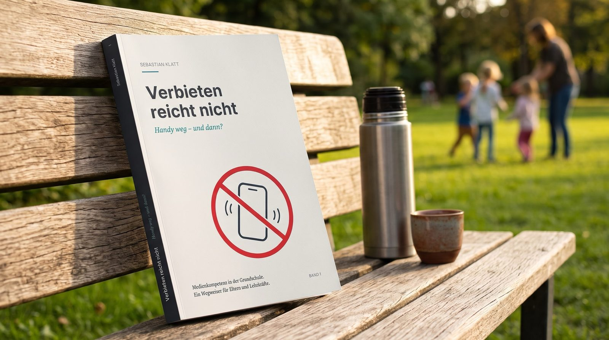
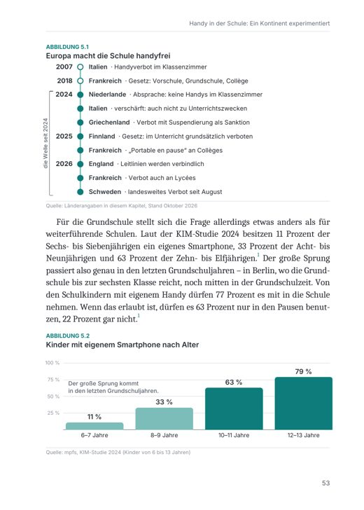
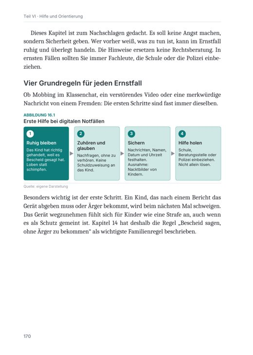

Verbieten
reicht nicht
Handy weg – und dann?
„Nur noch fünf Minuten.“ Dann die Tränen, dann die Tür. Und hinterher die Frage, die bleibt: War das jetzt richtig?
- Sofort lesen – auf Kindle, Smartphone oder Tablet
- 111 Quellen, Stand Oktober 2026

Worum es geht
Handy weg ist schnell gesagt. Aber was kommt danach?
Dieses Buch ist für Eltern und Lehrkräfte, die mehr wollen als Verbote – und die keine Zeit haben für Patentrezepte, die im Alltag nicht funktionieren.
Es zeigt, was Kinder zwischen sechs und zwölf Jahren wirklich mit Medien tun. Nicht, was wir vermuten. Es zeigt, was Handyverbote leisten und wo sie aufhören zu wirken – in Europa und in allen 16 Bundesländern. Und es zeigt, wie aus einem Verbot Begleitung wird: mit zwölf Projekten für Klassenzimmer und Küchentisch.
Verbote schaffen Ruhe
Sie sind sinnvoll, und sie geben Grundschulkindern Zeit. Aber sie erklären nicht, warum die Grenze gilt.
Wissen gibt Sicherheit
Wer versteht, wie Medien funktionieren, entscheidet auf der Grundlage von Fakten – auch dann, wenn niemand hinschaut.
Begleitung statt Angst
Kinder lernen den Umgang mit Medien nicht von allein. Sie lernen ihn an der Seite von Erwachsenen.

- Was machen Grundschulkinder wirklich mit Medien? Zahlen statt Bauchgefühl: was Kinder nutzen, ab wann und wie lange.
- Bringen Handyverbote an Schulen etwas? Von Frankreich bis Schweden – und was in Ihrem Bundesland gilt.
- Wie erkläre ich einem Achtjährigen Werbung, KI und Datenschutz? Zwölf Projekte, jedes mit Klasse, Dauer, Fächern, Lernziel und Material.
- Was tue ich im Ernstfall? Cybermobbing, Abzocke, ungeeignete Inhalte: erste Schritte und wo es Hilfe gibt.
Blick ins Buch
Sehen Sie selbst, was Sie bekommen.
Vier Originalseiten, unverändert aus dem Buch. Antippen zum Vergrößern.
 Das Inhaltsverzeichnis17 Kapitel in sechs Teilen – vom Warum bis zur Hilfe im Ernstfall.
Das Inhaltsverzeichnis17 Kapitel in sechs Teilen – vom Warum bis zur Hilfe im Ernstfall.


Zahlen statt BauchgefühlGrafiken und Ländervergleiche, belegt mit Quellen. Zwölf ProjekteJedes mit Klasse, Dauer, Fächern, Lernziel und Material.
Zwölf ProjekteJedes mit Klasse, Dauer, Fächern, Lernziel und Material.


Wenn es brenntWas im Ernstfall zu tun ist – Schritt für Schritt.Inhalt
Sechs Teile, 17 Kapitel, ein Weg.
Warum: Kindheit zwischen Bildschirm und Klassenzimmer
- Die Medienwelt der 6- bis 12-Jährigen
- Was Kinder in welchem Alter verstehen
- Warum Medienbildung in der Grundschule beginnen muss
Die große Debatte: Verbieten oder befähigen?
- Was die Forschung wirklich sagt
- Handy in der Schule: Ein Kontinent experimentiert
- Social-Media-Altersgrenzen weltweit
- Andere Wege: Finnland, Schweden, Estland
Wer: Alle tragen Verantwortung
- Medienbildung in Deutschland: Der Rahmen
- Die Akteure
Wie in der Schule
- Didaktische Grundsätze
- Der Methodenkoffer für die Grundschule
- Die Themen, kindgerecht erklärt
- Zwölf Projekte zum Nachmachen
Wie zu Hause und gemeinsam
- Medienerziehung in der Familie
- Schule und Eltern gemeinsam
Hilfe und Orientierung
- Wenn es brennt
- Wegweiser: Websites und Anlaufstellen
Dazu: Glossar, drei Kopiervorlagen und ein Quellenverzeichnis mit 111 Einträgen.
Worauf es sich stützt
111 Quellen. Belegt statt behauptet.
Die Zahlen im Buch sind mit ihren Quellen belegt. Im Anhang stehen alle 101 Studien, Berichte und Artikel und 10 Gesetzestexte – Stand Oktober 2026.
Darunter:
- KIM-Studie 2024
- JIM-Studie 2025
- Bitkom
- WHO Europa
- OECD
- The Lancet
- Nature
- The BMJ
- Kultusministerkonferenz
- Leitlinie der DGKJ
- UN-Kinderrechtsausschuss
- Bündnis gegen Cybermobbing
Ein Buch, das keine Angst macht, sondern Mut. Denn Wissen gibt Sicherheit.
Sätze aus dem Buch
Ein Kind, das an Zauberei glaubt, ist nicht naiv, sondern sieben.
Kapitel 2
Eine Regel, die ein Erstklässler wiedergeben kann, ist eine gute Regel.
Kapitel 5
Ein Kind, das ein Tablet flink entsperren und eine App öffnen kann, ist noch nicht medienkompetent.
Kapitel 10
Kinder, die sich kontrolliert fühlen, suchen Wege, die Kontrolle zu umgehen.
Kapitel 14

Wer das geschrieben hat
Ein Vater, kein Verbotsprediger.
„Der größte Auslöser für dieses Buch ist mein Sohn.“ So beginnt das Vorwort – und so ist es auch entstanden: aus den Fragen eines Vaters, dessen Kind gerade in genau diesem Alter ist.
Sebastian Klatt ist Mediengestalter Bild und Ton und arbeitet seit über 20 Jahren in der Medienproduktion. Er weiß, wie Bilder und Clips gemacht werden, die Aufmerksamkeit binden sollen. Im Förderverein der Grundschule seines Sohnes erlebt er, wie Eltern und Lehrkräfte um die richtigen Regeln ringen. Er lebt in Berlin.
Ehrlich gesagt
Für wen dieses Buch ist – und für wen nicht.
Das Buch ist für Sie, wenn …
- Ihr Kind zwischen 6 und 12 ist und das erste Smartphone näher rückt.
- Sie in der Grundschule unterrichten oder eine Klasse leiten.
- Sie in Elternvertretung oder Förderverein über eine Handyregel mitreden.
- Sie Gründe wollen statt Bauchgefühl.
Eher nicht, wenn …
- Sie ein Plädoyer gegen jede Bildschirmzeit suchen.
- Sie ein schnelles Patentrezept erwarten.
- Ihr Kind schon auf eine weiterführende Schule geht – der Schwerpunkt liegt auf der Grundschulzeit.
Jetzt bestellen
Heute Abend anfangen.

Kindle-Ausgabe · sofort verfügbar
- In Sekunden auf Ihrem Gerät – heute Abend auf dem Sofa, morgen in der Mittagspause.
- Kein Kindle nötig: Die kostenlose Kindle-App läuft auf Smartphone, Tablet und Computer.
- Schriftgröße und Helligkeit stellen Sie selbst ein.
Kauf und Lieferung laufen über Amazon.
Taschenbuch
200 Seiten, 15 × 21 cm. Mit den Kopiervorlagen zum Kopieren für Familie und Schule.
ISBN 9798165446795Für Schule und Verein
Ein Abend für Elternvertretung, Förderverein oder Kollegium.
Berlin und UmgebungSammelbestellung für Schule oder Förderverein? Schreiben Sie an kontakt@verbietenreichtnicht.de.
Leserstimmen
Ihre ehrliche Meinung zählt.
Das Buch ist gerade erst erschienen. Leserstimmen sammle ich hier, sobald es sie gibt – erfundene wird es auf dieser Seite nicht geben. Wenn Sie das Buch gelesen haben, hilft eine kurze, ehrliche Rezension anderen Eltern und Lehrkräften bei der Entscheidung.
Häufige Fragen
Bevor Sie bestellen.
Für welches Alter ist das Buch gedacht?
Für Kinder im Grundschulalter, also etwa zwischen 6 und 12 Jahren. In Berlin dauert die Grundschule sechs Jahre, deshalb reicht der Blick bis zur sechsten Klasse.
Ist das ein Buch gegen Handys?
Nein. Verbote können sinnvoll sein und Grundschulkindern Zeit geben. Das Buch zeigt, was sie leisten, wo sie aufhören zu wirken – und wie aus einem Verbot Begleitung wird.
Gilt das auch außerhalb von Berlin?
Ja. Das Buch vergleicht alle 16 Bundesländer. Berlin ist Beispiel, nicht Maßstab: Die Methoden und Projekte sind an kein Bundesland gebunden.
Brauche ich technisches Vorwissen?
Nein. Kapitel 12 erklärt Werbung, Datenschutz und künstliche Intelligenz so, dass Sie es einem Grundschulkind weitergeben können.
E-Book oder Taschenbuch?
Das E-Book gibt es jetzt sofort bei Amazon. Das Taschenbuch erscheint in Kürze und lohnt sich, wenn Sie die Kopiervorlagen aus dem Anhang kopieren möchten. Die drei Vorlagen gibt es schon jetzt kostenlos als PDF.
Wie aktuell ist das Buch?
Stand der Recherche ist Oktober 2026. Das Quellenverzeichnis nennt 111 Studien, Berichte und Gesetzestexte, darunter KIM- und JIM-Studie, WHO und Kultusministerkonferenz.
Kommen Sie auch an unsere Schule?
Ja, für Elternabende, Fördervereine und Kollegien in Berlin und Umgebung. Mehr zu den Vorträgen.
Vortrag, Elternabend oder Interview?
Für Veranstaltungen an Schulen, Presseanfragen und Rezensionsexemplare.